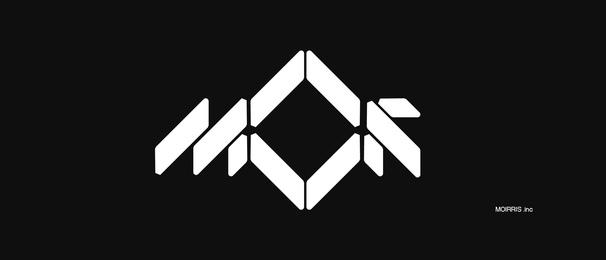
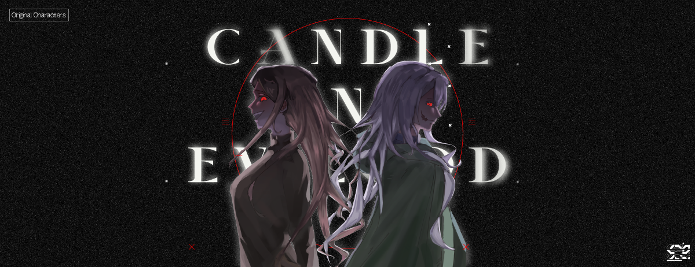

莫里斯公司
一家拿異常物品來賣錢的公司，也是故事發生的主舞台。

這是一個與現實社會稍微有一點差異的世界，但老實說也差不了多少——
《蠟燭與邪神》( Candle And Evilgod )的世界觀建立在一個以當前社會為基礎的架空世界下。
與我們所處的世界有所不同之處在於，這個世界觀有著通稱「異常事件」的現象。
所以，這個世界觀會發生類似這種事情：
————摘自《蠟燭與邪神》｜愚者 02
為此，一系列關於異常事件所衍生的系列故事、人物角色與各種拿來棄置作者多餘腦容量的設定就這麼誕生了。
——因為現實已經足夠瘋狂，只需要取其精華，去其糟粕……
此網頁是一個類似資料庫的東西，你會在這裡看到設定（不然你還期待甚麼，下一季樂透頭獎號碼？）之類的東西。
隨便逛逛，別搞壞東西，想看什麼自己找或跟我說一聲。
注意：本頁面含R18G內容，請斟酌觀看。
Factions
左右切換查看不同勢力
Storylines
Main Story
CTA前員工艾萊亞遭到了自家單位的背叛，不只慘遭降職，還被公司內部派人追殺。 在瀕死之際，她意外的從莫里斯公司主管CAE的手中活了下來，並帶進莫里斯公司，就此開始了她那充滿異常事件的生活……
Characters
沒有符合條件的角色。
Anomaly Events

Classification Reference
一個異常事件需經過「O.P.C.U」及「管理物質標籤」的分類才可進行完整歸檔。 前者告知一線人員如何處置，後者告訴研究人員這類異常屬於何種類型。
查看分級與物質標籤